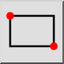

Rektangel
Verktøylinje/ikon:


Meny: Uavgjort > Form > Rektangel
Snarvei: R, E
Kommandoer: rectangle | linerectangle | rect | re
Dette er en automatisk oversettelse.
Verktøylinje/ikon:


Bruk dette verktøyet til å opprette rektangulære former fra to diagonalt motstående hjørner.
hjørnet av rektangelet. Alternativt kan du skrive inn koordinaten til det andre hjørnet i kommandolinjen. F.eks. for å opprette et rektangel med bredde 50 og høyde 25 skriver du inn den relative koordinaten til det andre hjørnet slik: @50,25